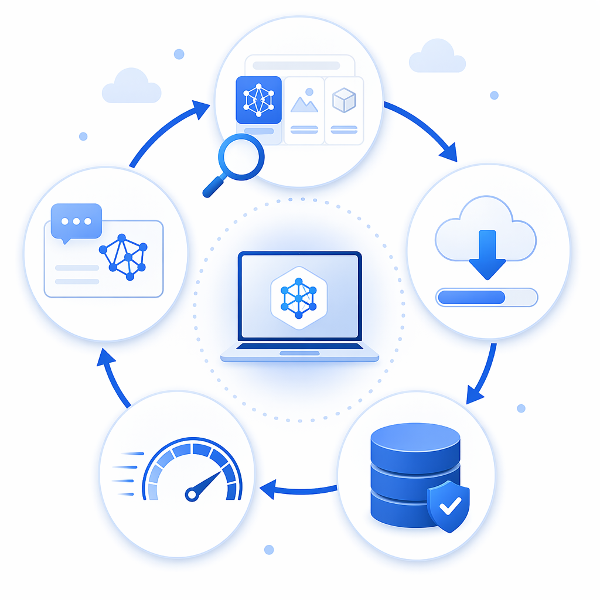
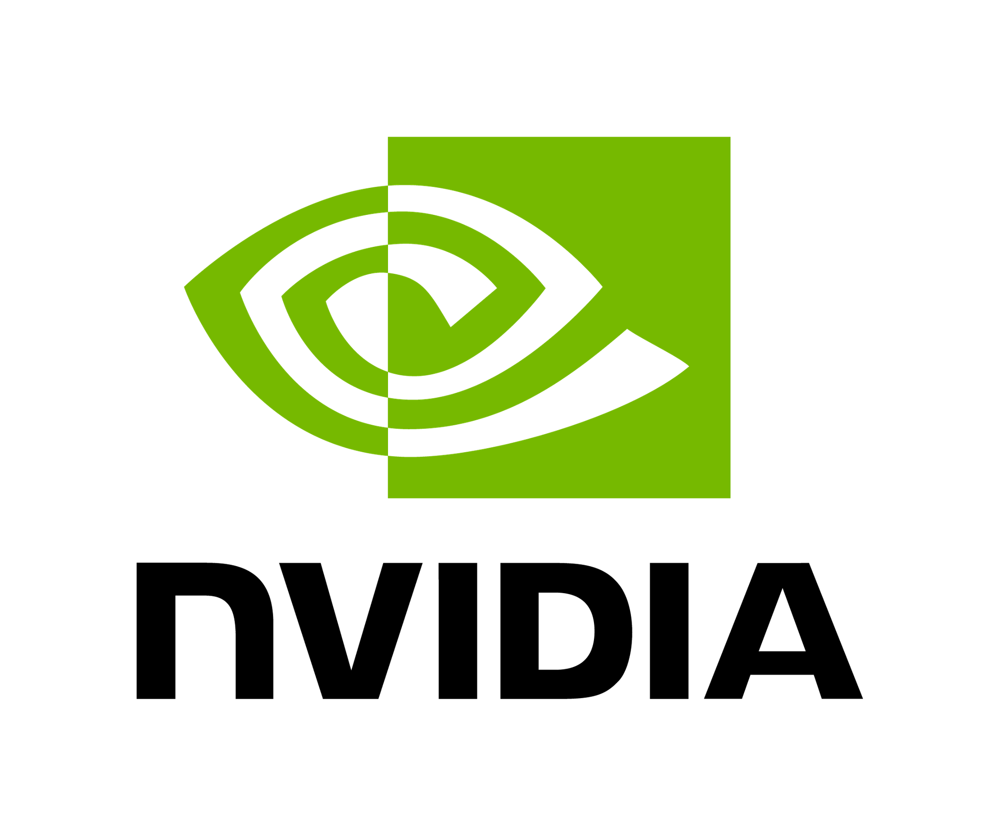

Real-time speech AI on your machine, with production-style model management
Why this matters
- NVIDIA Nemotron streaming ASR models run locally via Foundry Local.
- Low-latency transcription without routing microphone audio to cloud services.
- Same runtime lifecycle pattern you can reuse across local AI workloads.
Foundry Local
- Runs AI models fully on-device for local-first app experiences.
- Handles model download, loading, and reuse with a simple runtime lifecycle.
- Works with local endpoints so demos stay fast, private, and reliable.
1 / 4Use ←/→ or Space
Runtime lifecycle at a glance

Discover providers
Resolve model alias
Download + load on first run
Serve from cache on next run
DiscoverDownloadCacheServe
First run setup work
Cached run startup speed
Live transcription continuity
Visual story: setup cost once, then fast local iteration.
2 / 4Visual framing for live impact
Key C# code to call out live
EP discovery Model download/load Live stream session Unload + cache cleanupawait FoundryLocalManager.CreateAsync(config, NullLogger.Instance);
var manager = FoundryLocalManager.Instance;
var executionProviders = manager.DiscoverEps();
await manager.DownloadAndRegisterEpsAsync(...);
var catalog = await manager.GetCatalogAsync();
var model = await catalog.GetModelAsync(modelAlias);
await model.DownloadAsync(...); // first run download
await model.LoadAsync();
var audioClient = await model.GetAudioClientAsync();
var session = audioClient.CreateLiveTranscriptionSession();
await session.StartAsync(CancellationToken.None);
await foreach (var result in session.GetStream(CancellationToken.None)) { ... }
await loadedModel.UnloadAsync();
await loadedModel.RemoveFromCacheAsync(); // optional
3 / 4From
samples\11-foundrylocal-live-transcription\Program.csNVIDIA speech models + Foundry Local = practical local AI transcription
Foundry Local
Local runtime, model lifecycle control, and repeatable developer flow.

Docs: learn.microsoft.com/azure/foundry-local
4 / 4Thank you